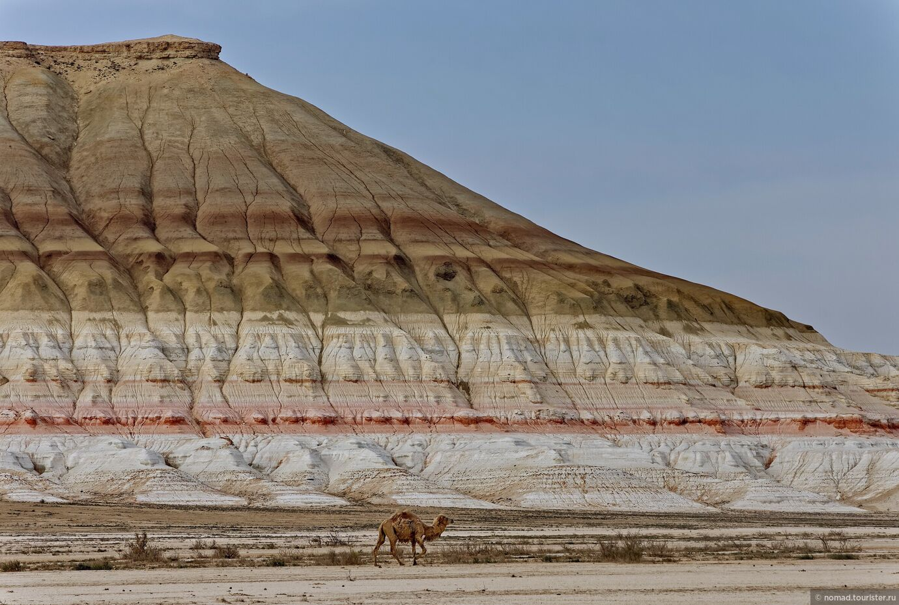
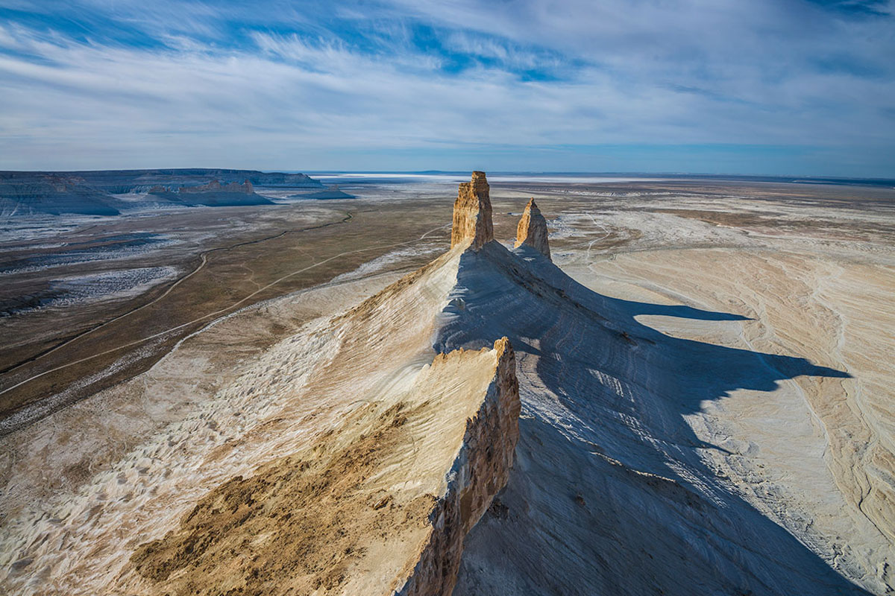
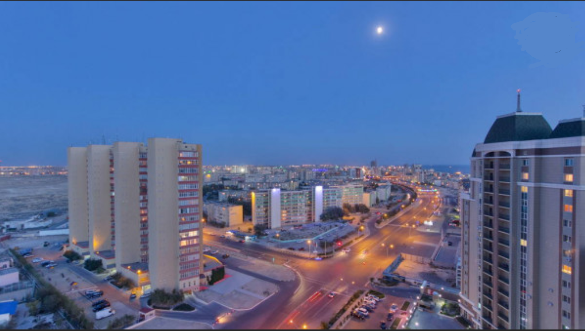

Guides
- Rubrics
- Travel

Aktau is a large industrial city on the coast of the Caspian Sea in Kazakhstan, the administrative center of the Mangistau region, located in the south-west of the country. Aktau cannot be called an ordinary regional center of this largest state in Central Asia, it has a special status - the only seaport in Kazakhstan is located here. And in Aktau, for the first time in the world, engineers supplied drinking sea water desalinated with the help of atomic energy to the city water supply system. In recent years, the industrial component is increasingly being squeezed by the leisure and entertainment industry, and signs of a growing tourism boom are becoming increasingly apparent.Figuratively speaking, a seaside town in a working overalls looks into the mirror of the Caspian Sea and tries on resort outfits.
The airport can receive aircraft of different types: domestic An-225 and An-124, Il-76, as well as Boeing-747. In addition, lighter aircraft and all types of helicopters can land at the airport without any problems. The area in which the airport is located is a gentle plain, for this reason it is summer weather almost all year round; nature has created the most favorable conditions for takeoff and landing, as well as good visibility in the sky.
Taxis can be ordered by phone directly from the airport, and if you need an early booking of a car, it can be done on the Aktau airport website. The average cost of a trip to the city center is about 2000 KZT. Prices on the page are for March 2019. There is ample parking near the airport - for those who get here by their own transport.

Grand Hotel Victorylocated in the city center, a few meters from the beach. Comfortable studios of standard, suite and royal apartments with sea views. There are rooms in the non-smoking area, as well as for people with special needs. The hotel complies with international safety standards. Additionally: restaurant, pub, fitness center, conference hall, health club. Room rates: from KZT 29,000 ($ 157) to KZT 150,000 ($ 812).
AktauRooms: standard, junior suite, suite. Rooms are equipped with refrigerator, cable TV, internet, telephone, dressing room and bathroom. Additionally: restaurant, pub, billiards. Room rates: from KZT 8000 ($ 43) to KZT 28000 ($ 152).
Silk Way Актау Rooms: economy, standard, junior suite. In the rooms: air conditioning, minibar, cable TV, internet. Breakfast is included in the room rate. Additionally: restaurant, conference room, gym. Room rates: from KZT 14000 ($ 76) to KZT 24000 ($ 130).
VictoryRooms: economy, standard, suite with air conditioning, refrigerator, cable TV, internet. Additionally: restaurant, bar. Room rates: from KZT 10000 ($ 54) to KZT 16000 ($ 87).
Rixos Water World Aktau"Is the first and only five-star hotel in Central Asia. The hotel offers its guests an all-inclusive luxury vacation. The resort is located on the picturesque coast of the Caspian Sea near the town of Aktau. Here you can endlessly admire the crystal clear azure waters. Treat yourself to a beach holiday with the whole family!
Caspian Riviera Grand Palace HotelThis luxurious hotel is located on a rocky slope on the very coast of the Caspian Sea, a 4-minute walk from the Shevchenko monument, 2 km from the Mangistau Regional Museum of History and Local Lore and 30 km from Aktau Airport.
RENAISSANCE AKTAU HOTEL Overlooking the Caspian Sea, this elite hotel is located on one of the largest streets, a 7-minute walk from the beach and 2 km from the central Beket-Ata mosque in Aktau.
Holiday Inn Aktauis a modern hotel on the coast of the Caspian Sea, offering the best place in Aktau for business and leisure. The hotel is located in a safe area of Aktau Residence, just a hundred meters from the sea coast with a beautiful beach and a convenient pier for swimming.
The Ustyurt plateau is the former bottom of the ancient Tethys ocean. Millions of years ago, the sea element raged here, traces of which in the form of fossilized marine life are still found here today. The canyons and cliffs of Ustyurt are a picturesque landscape. The inhabited land of the world - this is what the eastern poet called these meta. Rare, peculiar plants grow on the Ustyurt plateau, and wild animals and birds are found in need of protection. For this purpose, in 1984, the Ustyurt State Natural Reserve was organized.
Beket-Ata Myrzagul Uly was a very respected and revered Sufi in Western Kazakhstan. He was wise, kind, educated and had the gift of foresight. People came to him for advice and for a fair trial. In addition, Beket-Ata was a competent builder. Having chosen the desert peninsula of Mangistau for his hermitage, he built four mosques on it during his life.
The mountain is located between two mountain ranges of the Karatau Mountains. In ancient times, the Great Silk Road passed at its foot, and at its top, according to scientists, an impregnable fortress rose, which protected Mangistau from invading enemies. It is very difficult to climb Sherkala, but it is even more difficult to descend from it. And in its many caves it is better not to look at all: spirits live in them, which it is better not to disturb. Many other legends are associated with the mountain. The picturesque mountain has been portrayed more than once
Tamshaly canyon The space of the Tamshaly canyon suggests an excellent pastime for both lovers of active recreation and those who like the opposite. Here each person can be charged with the spirit of travel and amazing discoveries, receiving as a keepsake the precious emotions received from staying in Mangystau
If you get tired of the bustle of the city and exhaust gases, go to the southeast of the city to the Park named after the First President(intersection of Navoi Street and Al-Farabi Avenue), where you can not only enjoy the beautiful views of the Tien Shan, singing fountains and scattered throughout park sculptures, but also organize a picnic in the gazebo or right on the well-groomed grass. The entrance to the park is free (keep in mind, you won't be allowed with four-legged friends).
Charyn canyon. Although it is located at a distance of 200 km from the city and it is rather difficult to get there on your own, due to the absence of real asphalt roads, you simply must visit this place, because there are only two such formations in the world: the Charyn Canyon and the American Grand Canyon. An additional attraction for Marco Polo fans: several scenes of the first season were filmed here. You can get to Charyn on your own in a rented car (SUV, of course) or book an excursion (yes, the guide will broadcast all the way, but this will not prevent you from sleeping for three hours, and on the way back you will definitely want it, believe me). An economy tour will cost you € 14.5, an individual jeep tour with a stop at the golden eagle farm will cost you € 290.

"Chechil pub".Once one of the employees of the company, I will be another bartender, I saw him visiting one and the same CHElovek, we call him so. It was difficult to notice: this man was 30 years old, altruistic by nature, very kind and erudite. He was able to easily make acquaintances with people, d id not strive for fame, but always went to the fight for justice.
Beef Eater Bar&Grill . Nice mid-range Italian restaurant. Contemporary decor, signature cocktails and proximity to the city center make this a great choice for the weary traveler. Pizza from € 4, steak from € 10, cocktails from € 2.
"CHEF`S"- family restaurant in the city of Aktau. Alcohol-free. Family lunches and dinners - spend time at Chefs! We have a varied menu for lovers of delicious cuisine! For those who value privacy and special comfort, the CHEF`S restaurant offers cozy VIP lounges. Come to CHEF`S with children - we have developed a special children's menu for the youngest guests, as well as a children's room.
"Fistashka"- oriental fusion, European and Pan-Asian cuisine - in the author's reading. We have kept the family format, there is a large play area for children. And also only in Fistachka there is a children's room - a toilet with children's plumbing, a changing table. A varied menu in the kitchen and bar will delight gourmets. All dishes are prepared to order by our professionals - interactive grill, tandoor, where we bake flat cakes and samsa, oriental sweets and even cheeses we make ourselves.
"Mahalla ".Mahalla oriental restaurant in Aktau Oriental cuisine restaurant - harmony of traditions, aesthetics and beauty. Festive and mysterious melody of the East, richness of tastes of the dishes of the peoples of Central Asia. Feel like a check. Here you will be offered to try: Traditional shish kebab from young lamb or beef. Fragrant lagman with lamb.
"Barbecue from Uncle Gadim"- a cozy place located on a quiet street not far from the center. There is a nice little terrace (the best place in the establishment). The pleasant atmosphere, Italian cuisine and breathtaking desserts will win your heart. The best place for romantic brunch. Average bill is € 6-12.
"Red Dragon".Chinese restaurant with a Chinese chef. A varied menu (we bet you don’t know what 80% of the items mean?), Generous portions, but if you’re not a spicy lover, it’s better to check the spiciness of the selected dish with the waiter. During the business lunch, the all you can eat buffet for only € 3 per person.

The shopping and entertainment complex "Aktau" is a real gift for the residents of the city, conveniently located in the new, 16th microdistrict and already openly claiming the title of a new center of attraction for residents of the city. In this case, "Aktau" is the most convenient shopping mall! Competent access to the shopping mall, well-designed street and underground parking, escalators, travelators, elevators, including panoramic, wide light corridors - provide the most comfortable conditions for visitors.
Yellow BazaarIn this huge pavilion with 800 seats (and in the adjoining annexes) you can find everything your heart desires: from dried apricots to camel bacon.
UNICORNer.Will undoubtedly interest you not only with designer clothes, but also with a selection of bags and accessories.
If your heart lies to the mass market, the largest shopping centers in Аktdu will help you:Aktau(17mkr), Astana (15mkr),Baiterek (27mkr) и Alatau).
Shum - a boutique where you can look for things from fashion designers from Kazakhstan and Central Asia.
Olzha - This stylish concept store in Almaty brings together leading designers from Kazakhstan, Ukraine, Georgia and China. The boutique has an excellent selection of collections from such designers as LaRiya, Aida KaumeNOVA, JAKA Fashion, Sandella, Tamara Lamanukaeva, Salle de Mode, Atelier Artisan, Leonid Zherebtsov, Teezar Studio.